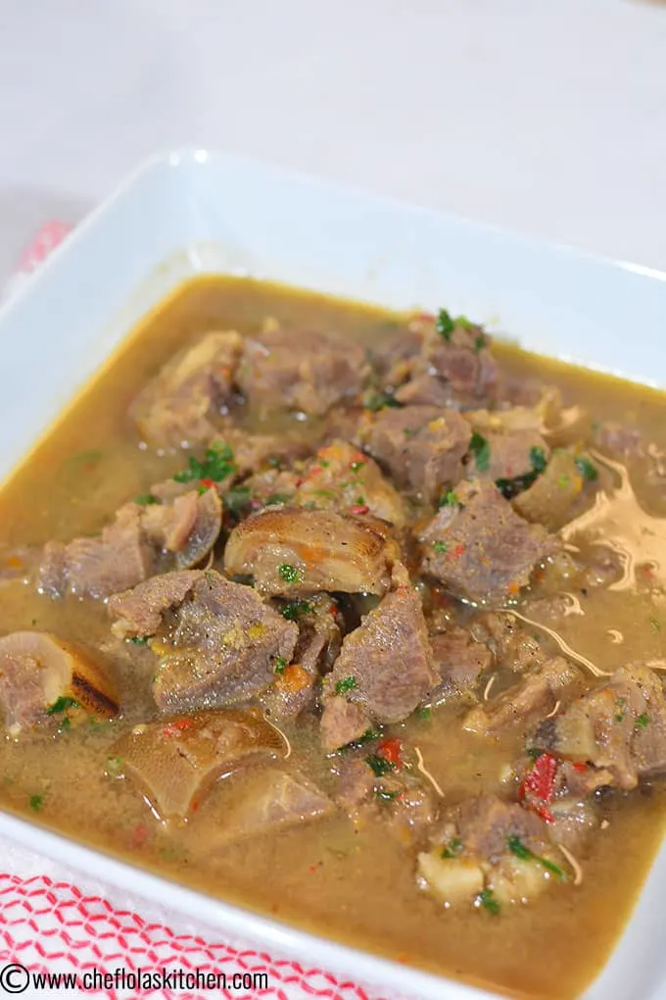

Efo Riro

Description
African pepper soup is a hearty African soup made with Goat
meat cutlets or chunks, pepper soup spice, and other beautiful
condiments. If you are looking for an authentic Goat meat
pepper soup, this soup certainly delivers the big, bold African
flavors you will love.
The African Pepper soup is primarily liquid, usually served
hot and this is made by boiling Meat or Fish of choice in
order to extract flavor from them. The broth from this Meat
is then further seasoned with authentic African spices.
It can be served with boiled Potatoes, Rice, Bread or
just eat ”as is”.
Ingredients
- 2 Tsp Uziza leaves
- 1 pound Goat meat
- 2 Tsp Crayfish
- 1 Tbs Pepper soup spice
- 1 Tsp Red Chili flakes
- 1 Tsp Ginger powder
- Salt to taste
- 1 small Onion
- 1 Scotch bonnet de-seeded and minced
- 1 Seasoning cube
- 4 Cups Water
Steps
- Cut the Goat meat into cutlets (see note 4). Then rinse thoroughly, transfer the meat into the Pot, add salt, Seasoning cube, habanero peppers and half of the Onion (see note 5) and cook for 30 minutes.
- Add the pepper soup spice, red chili flakes, Ginger powder, the remaining grated onion, and crayfish. Leave it to cook for another 10 minutes.
- Stir in the uziza leaves and let it simmer for another 5 minutes. Serve hot with Yam, Rice, Bread and more.